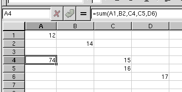

2.3. Cell Referencing
To reference the value stored in a single cell, B1 for example, just enter "B1" as the function argument.
Cells are referenced in a format like C4, where C is the column label and 4 is the row label.
2.3.1. Absolute cell referencing
Cells can be referenced in the default way (relative referencing), or by using absolute referening. Absolute referencing means that when the cell is copied, the cell reference does not change. Normally, autofilling a cell range or moving cell will change its cell reference to so that it maintains a relation to the original cell. With absolute cell referencing this, behaviour is overridden.
The format for absolute cell refencing is to use a '$' in front of the cell coordinate that the user wants to stay constant. The column, row, sheet, or any combination of these can be held constant.
2.3.2. Referencing multiple cells
Many functions can take multiple cells as arguments. This can either be a comma separated list, an array, or any combination thereof.
2.3.2.1. Multiple individual cells
A comma separated list of cell references can be used to indicate cells that are discontinuous.

2.3.2.2. Referencing a continuous region of cells
For functions that take more than one argument, it is often easier to reference the cells as a group. This can include cells in sets horizontally, vertically, or in arrays.
The ':' operator is used to indicate a range of cells. The basic syntax is upper left corner:bottom right corner.

2.3.2.3. Referencing non-continuous regions
For referencing cells that are in non-continuous regions, you can use any combination of the above methods to get the needed cells.
2.3.3. Referencing cells on other sheets
It is possible to reference cells which are not part of the current sheet. This is done using the NAME!CELL syntax, where NAME is an identifier (usually a sheet name) and CELL is a regular cell reference as described in the previous sections.
Note that if NAME contains spaces, you need to quote the whole name to allow Gnumeric to group the separate words in NAME as single name. For example, you should use "Sheet 0" when referencing the default created "Sheet 0".